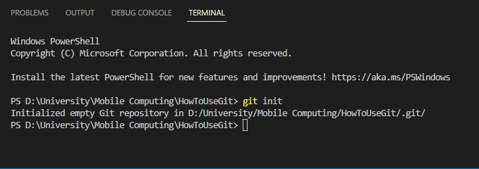
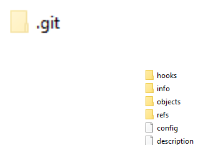
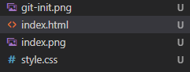
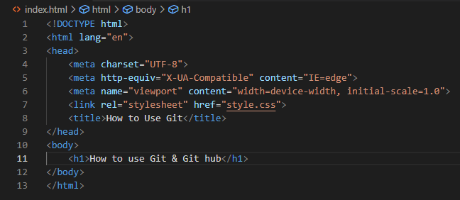
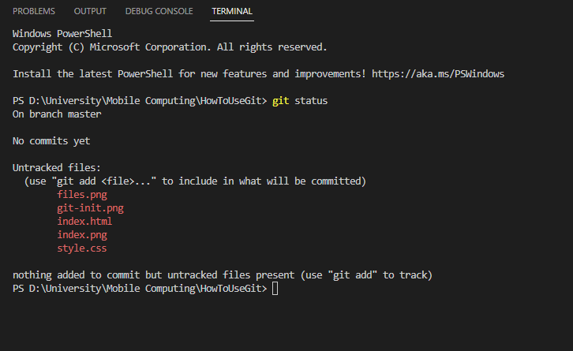
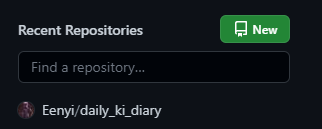
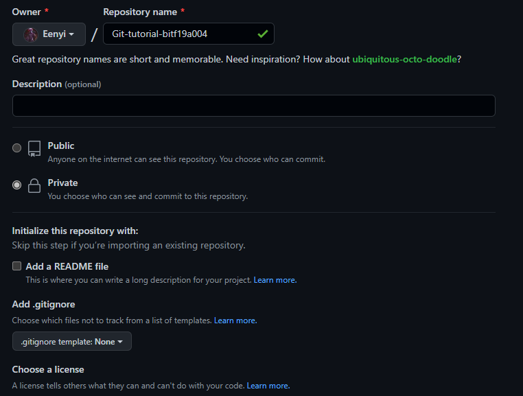
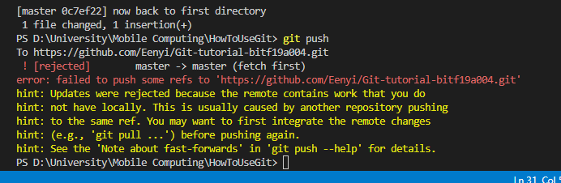

Make a local repository and run git init command in terminal
 Add files like index.html and style.html
 check status by using git status comand
Now run these commands.
=> git add . (to add all changes)
=> git commit -m "commit message" (to commit all changes)
Now, Go to github.com and login to your account and Make a new respository
 connect your remote repository to your local repository by using command "git remote add origin URL"
Now, when ever you chnage your code run these commands
=> git add .
=> git commit -m "commit message"
=> git push
pull this respository into another directory
for this, make another folder and open it in VS code, now open terminal and type command
git clone "URL" , url will be get from git hub remote repository
now I'm pushing the changes from second pulled directory
In 1st local directory we must pull first then change then push back to remote directory, otherwise given error will be displayed
once you pull the code then the error will solved, now your normally add, commit and push, it means in second repository you will also pull first then change then push.